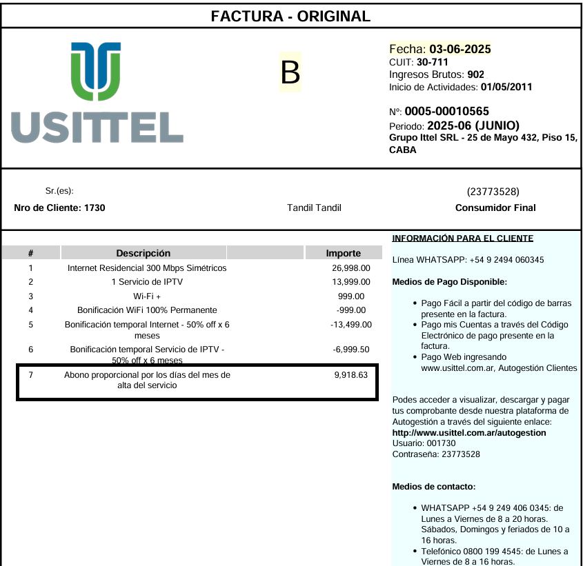
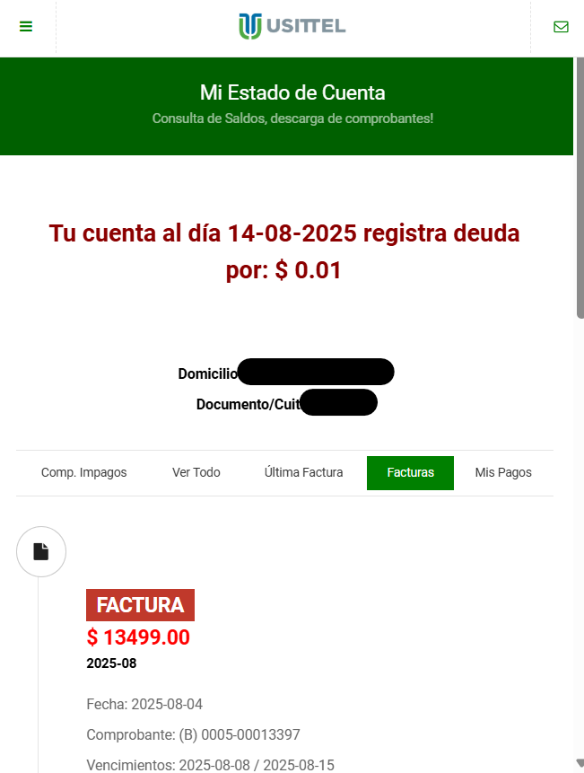
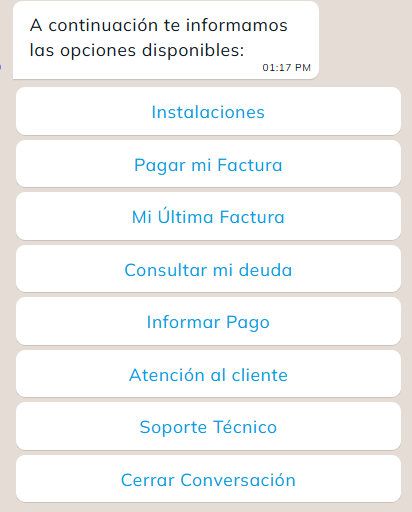

CENTRO DE AYUDA
¿En qué podemos ayudarte?
Encontrá respuestas y guías para aprovechar tus servicios.
Televisión
Sensa, dispositivos y acceso a tu cuenta.
Recursos y Guías para TV
¿Cómo sé si mi TV o dispositivo es compatible con Sensa?
Compatibilidad de Dispositivos
Para saber si tu TV o dispositivo es compatible con Sensa, consultá los instructivos específicos para cada plataforma:
Dispositivos Totalmente Compatibles
Aclaración: Sensa es compatible con todos los dispositivos Chromecast y Roku.
¿Cómo accedo a Sensa?
Acceso a Sensa TV
Tus Credenciales
Una vez obtenido tu usuario y contraseña en el mail de bienvenida de Usittel, deberás descargarte la aplicación SENSA TV desde el store de tu dispositivo (Google Play Store, App Store, Amazon Store, Roku Channel Store).
¡También en PC!
También podés disfrutar el servicio desde el navegador web de tu PC en player.sensa.com.ar.
Uso de la App
Olvidé mis datos de acceso
Recuperar Datos de Acceso
Proceso de Recuperación
Debes seleccionar el enlace "Olvidé mis datos de acceso" en la página de inicio de sesión www.sensa.com.ar y te llegará un mail al correo con el que se registró tu cuenta.
No me llega el email para recuperar la clave de acceso
Problemas con el Email de Recuperación
Revisar Carpeta de Spam
Si no recibes tu e-mail de confirmación es probable que lo encuentres en tu carpeta de spam o correo no deseado. Marca el correo como seguro o envíalo a tu bandeja de entrada.
¿Sigue sin llegar?
Si tras varios intentos seguís sin recibir el email consultá a nuestro WhatsApp para que revisen el estado de tu cuenta y tus datos.
¿Dónde puedo ver Sensa?
Dispositivos Compatibles
Un usuario común puede ver Sensa en los siguientes dispositivos:
¿Cómo borrar un dispositivo para liberar un espacio?
Gestión de Dispositivos
Portal de Administración
Deberás entrar con tu usuario y contraseña a la web de Sensa www.sensa.com.ar y desde allí administrar tus dispositivos.
Liberar Espacio
Podés eliminar los dispositivos que ya no uses para liberar un espacio y poder agregar uno nuevo.
Internet y WiFi
Conexión, velocidad y cobertura dentro de tu hogar.
Recursos y Guías para Internet
¿Dónde instalamos el módem WiFi?
Ubicación Estratégica del Módem
Zona de Uso Intensivo
Nuestros técnicos validaron, al momento de realizar la instalación, la "zona de uso intensivo dentro del hogar" que es la zona en la cual se reúne la familia al momento de usar Internet.
En dicha zona es donde realizamos la instalación del módem WiFi para que ahí puedan disfrutar la máxima velocidad.
¿Cuál es la diferencia entre la frecuencia de 2.4 GHz y 5 GHz?
Diferencias entre Frecuencias WiFi
La diferencia principal entre 2.4 GHz y 5 GHz es:
2.4 GHz
Mayor alcance, pero menor velocidad y más interferencias (muchos dispositivos y electrodomésticos usan esta frecuencia).
5 GHz
Menor alcance, pero mayor velocidad y menos interferencias. Ideal para aprovechar al máximo la velocidad contratada, si estás cerca del módem.
Recomendación
Si necesitás más cobertura, usá 2.4 GHz. Si buscás más velocidad y hay poca distancia al módem, usá 5 GHz.
¿Tenés zonas sin cobertura WiFi o con menos velocidad?
Optimización de Cobertura WiFi
Instalación Optimizada
Al instalar el servicio, buscamos la mejor ubicación para el módem dentro de la zona de mayor uso en tu hogar, para optimizar la cobertura WiFi.
Factores que pueden afectar la señal
- Distancia al módem
- Paredes u obstáculos
- Interferencias de otros equipos o redes cercanas
- Cantidad de dispositivos conectados
Solución recomendada
Si notás zonas con poca cobertura o menor velocidad, probá reiniciar el módem (apagando y encendiendo desde el botón trasero, con cuidado de no mover el cable de fibra óptica). Si el problema persiste, contactanos para asesoramiento.
No se alcanza la velocidad contratada, ¿Qué puede ser o qué puedo hacer?
Diagnóstico de Velocidad
Para entender por qué no se alcanza la velocidad contratada, es importante analizar cómo está conectado el dispositivo desde el cual realizás la prueba de velocidad. Existen dos formas principales de conexión: por WiFi o por cable de red (Ethernet).
Si estás conectado por WiFi:
- Verificá que tu dispositivo (celular, notebook, PC, etc.) sea compatible con la norma WiFi 5 (también llamada "ac") o superior. Si tu dispositivo solo soporta WiFi 4 (norma "n") o anterior, no podrá alcanzar velocidades de 100 Mbps o más.
- Asegurate de estar conectado a la red WiFi de 5 GHz (suele tener un nombre diferente al de 2.4 GHz). La red de 2.4 GHz tiene mayor alcance pero menor velocidad y más interferencias; la de 5 GHz permite aprovechar al máximo la velocidad contratada, pero solo si estás cerca del módem (idealmente a menos de 2 metros y sin paredes de por medio).
- Si estás lejos del módem, hay paredes u obstáculos, o hay muchas redes WiFi cercanas, la velocidad puede verse afectada. En ese caso, acercate al módem y volvé a probar.
- Si tenés dudas sobre la cobertura o la diferencia entre 2.4 GHz y 5 GHz, consultá las preguntas frecuentes relacionadas.
Si estás conectado por cable de red (Ethernet):
- Revisá si tu dispositivo tiene un puerto de red Fast Ethernet (soporta hasta 100 Mbps) o Gigabit Ethernet (soporta hasta 1000 Mbps). Si tu equipo solo tiene Fast Ethernet, no podrá superar los 100 Mbps aunque el servicio contratado sea mayor.
- Si usás un router propio entre el módem y tu dispositivo, asegurate de que tanto el router como el dispositivo tengan puertos Gigabit Ethernet. Si alguno de los dos tiene solo Fast Ethernet, la velocidad máxima será de 100 Mbps.
- Los cables de red también deben ser de buena calidad (preferentemente categoría 5e o superior) para soportar altas velocidades.
¿Cómo hacer una prueba de velocidad confiable?
- Desconectá todos los dispositivos de la red, excepto aquel con el que vas a hacer la prueba.
- Si es posible, conectá el dispositivo por cable directamente al módem.
- Accedé a 10.85.0.10/speedtest/ y realizá la prueba.
- Si hacés la prueba por WiFi, recordá: usá un dispositivo compatible con WiFi 5 (ac) o superior, conectate a la red de 5 GHz, y ubicá el dispositivo cerca del módem (sin paredes de por medio).
Otros factores a tener en cuenta:
- Si la velocidad disminuyó respecto al momento de la instalación, puede deberse a interferencias de otras redes WiFi cercanas, nuevos dispositivos conectados o cambios en la ubicación del módem.
- Te recomendamos reiniciar el módem apagándolo y encendiéndolo desde el botón trasero (tené cuidado de no mover el cable de fibra óptica, ya que es muy delicado).
¿Es posible mover el módem de lugar?
Reubicación del Módem
Ubicación Estratégica Actual
Nuestros técnicos validaron, al momento de realizar la instalación, la "zona de uso intensivo dentro del hogar" que es la zona en la cual se reúne la familia al momento de usar Internet. En dicha zona es donde realizamos la instalación del módem WiFi para que ahí puedan disfrutar la máxima velocidad. A su vez, identificaron el mejor lugar para dejar la mayor cobertura WiFi posible en el domicilio.
¿Por qué no recomendamos moverlo?
No recomendamos moverlo dado que está instalado, por lo que mencionamos anteriormente, en un lugar estratégico y, también, el cable de Fibra Óptica que está conectado entre el módem y la roseta ubicada en la pared es muy delicado. Si a pesar de lo descrito anteriormente necesitas moverlo, podés contactarte con nuestro equipo para contratar una mudanza interna.
Recordá que:
- Te dejamos instalado un módem de última tecnología para que puedas disfrutar del servicio sin inconvenientes.
- No dobles o enrolles el cableado que conecta el módem a la roseta instalada en la pared. Dicho cable es fibra óptica, es sumamente delicado y cualquier movimiento incorrecto puede afectar el funcionamiento del servicio.
- No manipules el dispositivo. Cualquier mal movimiento, puede generar inconvenientes en el cableado de Fibra Óptica y afectar el correcto funcionamiento del servicio.
¿Qué hacer cuando hay lentitud en Internet?
Solución para Lentitud de Internet
Causa Principal
La lentitud ocasional puede deberse a congestión en los canales WiFi. La solución más efectiva es reiniciar tu equipo.
Pasos para Reiniciar
- Desconectá el módem/router de la corriente eléctrica
- Esperá 30 segundos
- Conectá nuevamente el equipo
- Esperá 1 minuto para que se complete la configuración automática
¿Por qué funciona?
- Al reiniciar, el WiFi busca automáticamente un canal menos congestionado
- La transmisión del WiFi levanta por un canal con mayor velocidad
- Se limpia la memoria del dispositivo y se optimizan las conexiones
Si la lentitud persiste, contactanos por WhatsApp para que nuestro equipo técnico pueda asistirte.
Administrativas
Facturas, medios de pago y atención al cliente.
¿Cómo va a ser el valor de mi primer factura?
¿Por qué mi primera factura es diferente?
Tu primera factura será un poco más alta de lo habitual, y esto es completamente normal. Te explicamos por qué:
Nuestro sistema de facturación
Facturamos a mes adelantado, es decir, en cada factura pagás el servicio del mes que viene, no el que ya pasó.
Los días desde la instalación
Además del mes completo que viene, también cobramos los días que ya usaste el servicio desde que se instaló hasta que termine el mes actual.
Ejemplo simple:
Si instalamos tu servicio el 15 de enero:
- Febrero completo: $15.999 (valor normal de tu plan)
- 16 días de enero: $8.533 (del 15/01 al 31/01)
- Total primera factura: $24.532

¿Cómo me entero si tengo una nueva factura para abonar?
Notificación por Email
En cada ciclo de facturación (primeros días del mes) te enviamos automáticamente por correo electrónico tu factura adjunta y/o un enlace para descargarla directamente a la casilla de email que registraste en USITTEL.
Portal de Autogestión
También tenés disponible MI USITTEL, donde podés acceder las 24 horas para:
- Ver tu balance de cuenta actualizado
- Consultar facturas pendientes de pago
- Descargar facturas anteriores
- Revisar el historial de pagos
Contactanos a través de WhatsApp o teléfono con tu email o celular registrado, y te ayudaremos a recuperar tu usuario para que puedas acceder nuevamente.

¿Cómo descargar la factura por WhatsApp?
También podés solicitar tu factura de manera rápida y sencilla a través de nuestro bot de WhatsApp. Solo tenés que escribir al +54 9 249 406-0345.
Pasos a seguir:
- Iniciá la conversación con nuestro bot
- Seleccioná la opción "Soy cliente"
- Elegí "Última factura"
- El bot te enviará automáticamente tu factura más reciente
Tip: También podés consultar el estado de tu deuda actual en cualquier momento seleccionando "Soy cliente" y luego "Consultar mi deuda".

¿Cuáles son los medios de pago?
Los medios de pago disponibles son:
-
Rapipago, Pago Fácil, CobroExpress: a partir del código de barras presente en la factura.
-
Pago mis Cuentas, Red Link: a través del Código Electrónico de pago presente en la factura.
-
Mercado Pago: presionando el botón en la notificación, o escaneando el código QR en la Factura.
-
Débito automático desde tu cuenta bancaria o tarjeta de crédito. Contactanos para adherirte y evitar preocuparte por las fechas de vencimiento.
-
Tarjeta de débito o crédito desde la web de autogestión: ingresando desde el botón Autogestión en usittel.com.ar o directamente desde usittel.com.ar/autogestion. Para iniciar sesión usá los datos que figuran en tu factura; si no podés obtenerlos, comunicate con nosotros por WhatsApp y te los brindamos.
¿Dónde me tengo que contactar si necesitara hablar con un representante?
Canales de Atención al Cliente
Estamos disponibles para ayudarte a través de nuestros diferentes canales de comunicación:
¿Qué dejamos instalado en el hogar?
Instalación Completa en tu Hogar
Te proporcionamos una instalación completa con la mejor tecnología disponible en Tandil para que puedas disfrutar de internet de alta velocidad desde el primer día.
Fibra Óptica
La tecnología más avanzada para internet, garantizando velocidades estables y confiables hasta tu hogar.
Módem WiFi AC
Equipo de última generación que soporta la velocidad contratada con excelente cobertura WiFi.
Instalación Profesional Incluida
- Cableado interno hasta el punto de conexión óptimo
- Configuración completa del módem WiFi
- Pruebas de velocidad y cobertura
- Capacitación básica sobre el uso del servicio